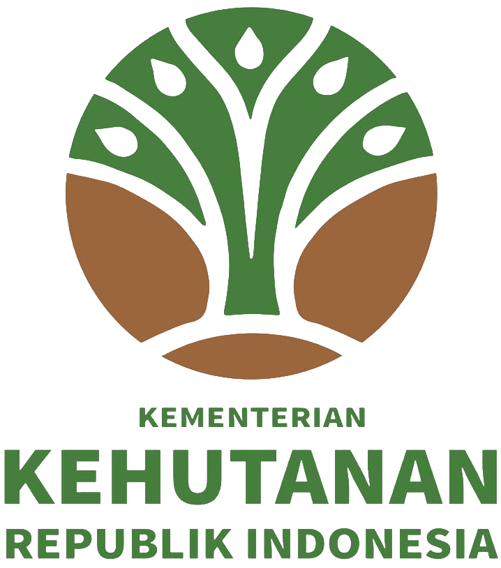
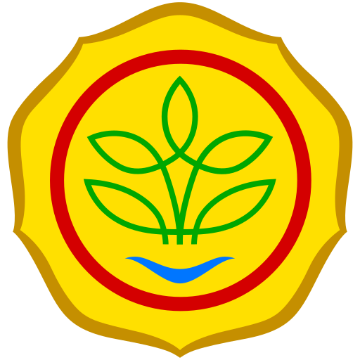
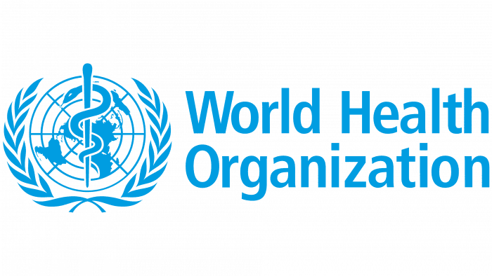
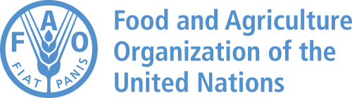

Total Pagu
Rp79,89 M
Alokasi 3 DIPA Tahun 2026
11 Satker


Memperkuat kapasitas kesiapsiagaan dan respons pandemi Indonesia melalui pendekatan OneHealth yang terintegrasi, dengan fokus pada Penyakit Infeksi Emerging (EID).
Closing Date: 31 Agustus 2028 dengan skema pendanaan Pandemic Fund & World Bank.
Kementerian Kesehatan bertindak sebagai Executing Agency (EA) bersama K/L mitra.
Kemenkes, BRIN, Kementan, Kemenko PMK, Kemenko PM, dan Kemenhut.
One Health for a Healthier Indonesia · Grant No. TF0B9745
Collaborative Approach for Resilient Surveillance and Pandemic Preparedness in Indonesia
Fokus strategis kesiapsiagaan pandemi terintegrasi
Penguatan kesiapsiagaan sistem laboratorium deteksi dini, respons cepat KLB, dan tata kelola tanggap darurat kesehatan nasional.
Kepatuhan terhadap standar surveilans terpadu global, verifikasi sinyal wabah 48 jam, dan akreditasi bio-keamanan laboratorium.
Penyaluran anggaran kontraktual ke Kemenko PM, Kemenko PMK, Kemenhut, Kementan, dan BRIN guna memastikan interoperabilitas One Health.
Pendekatan holistik yang memadukan kesehatan manusia, hewan, satwa liar, dan lingkungan hidup.
Lembaga pelaksana sesuai slide pembuka Monitoring & Evaluasi Kinerja CARE-I 2026




11 satker pelaksana · Total pagu Rp 79,89 M
Pertumbuhan realisasi kumulatif dibandingkan target pagu tahun 2026
Distribusi pagu 4 komponen utama kegiatan
Klik DIPA untuk menyaring satker atau gunakan tombol cakupan di sebelah kanan
11 satker · diurutkan berdasarkan pagu terbesar
Ringkasan alokasi, realisasi SP2D, capaian, dan sisa per satuan kerja
| Satker | Pagu | Realisasi | Capaian | Sisa | Status |
|---|
Penyaluran dana Termin I dan status kegiatan kontraktual lintas K/L
| Kementerian / Lembaga | Tgl Kontrak | Tgl Transfer | Pagu Kontrak | Realisasi SP2D | Capaian | Kegiatan Utama Terlaksana |
|---|
Berdasarkan 70 kegiatan pada lembar kerja sumber
Distribusi kegiatan berdasarkan % realisasi
Capaian penyerapan realisasi per komponen
Kegiatan dengan capaian terendah
Menampilkan 0 kegiatan
| Kegiatan | Satker | Pagu | Realisasi | Capaian | Sisa | Status | Aksi |
|---|